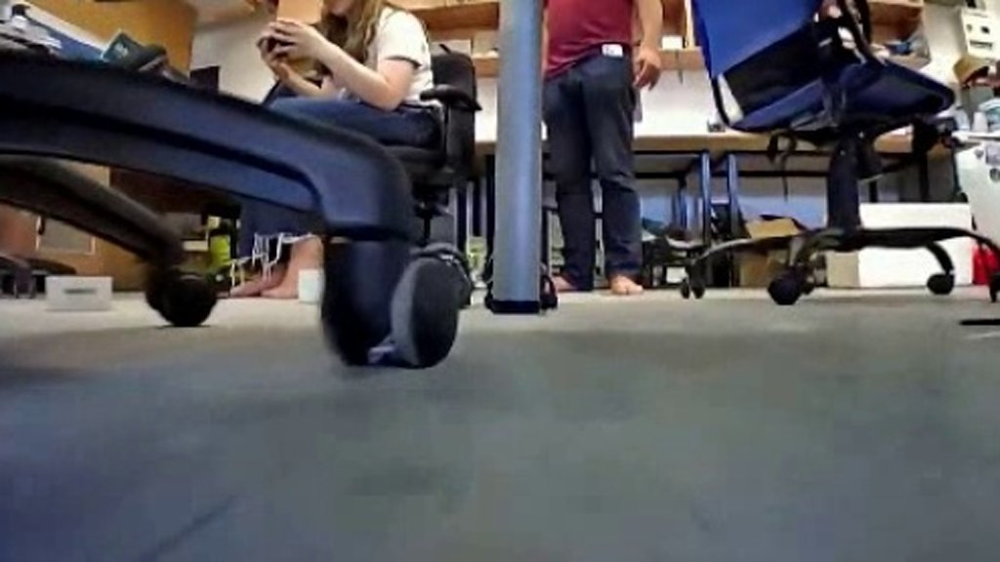
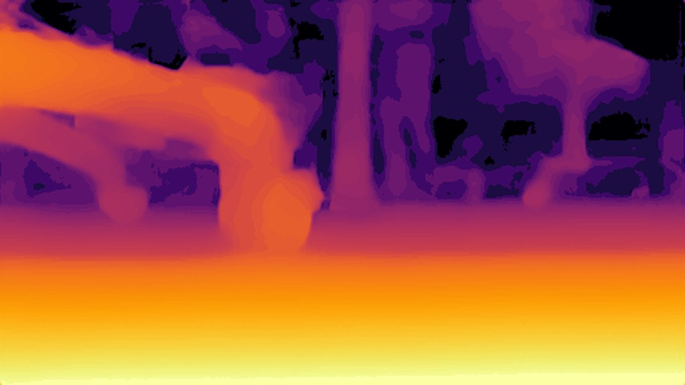
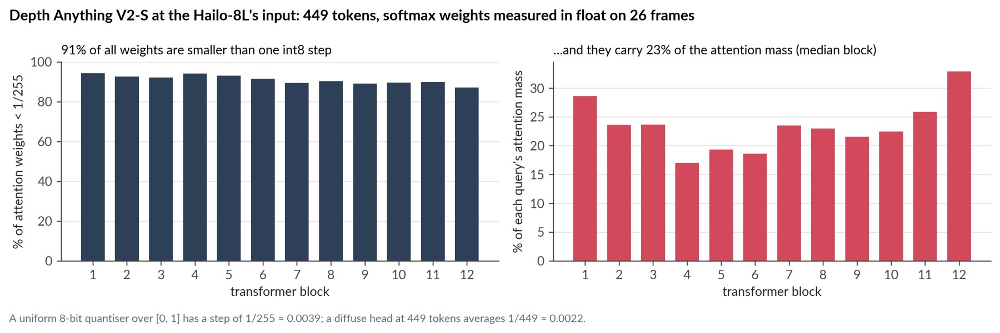
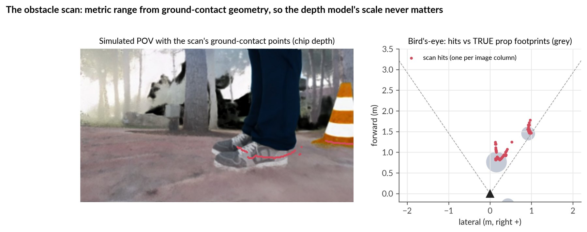
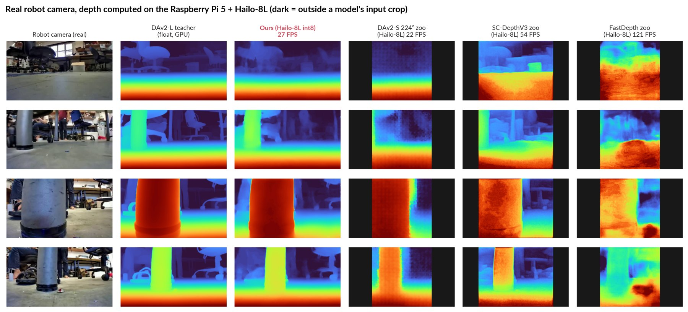
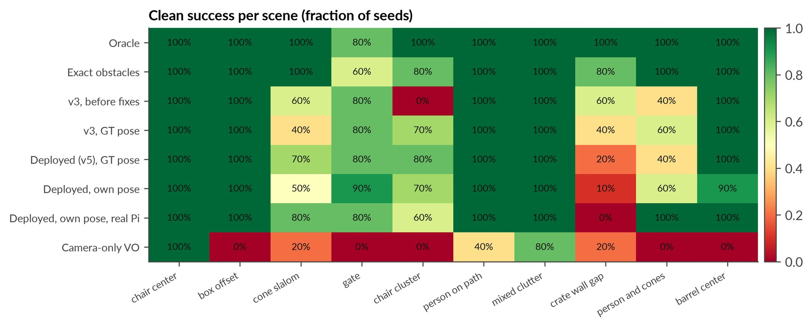
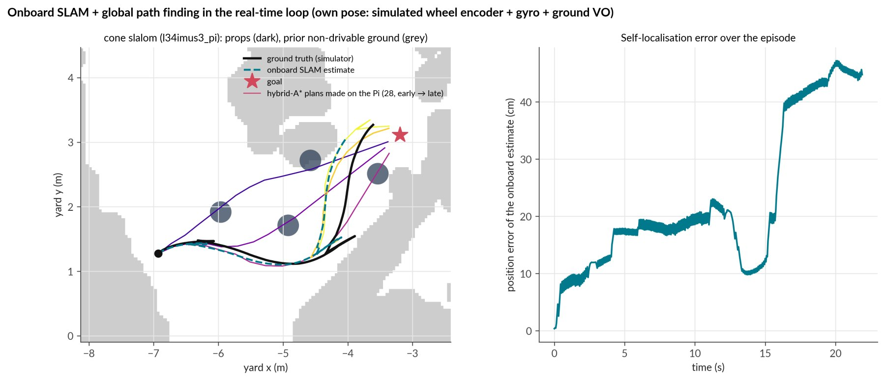
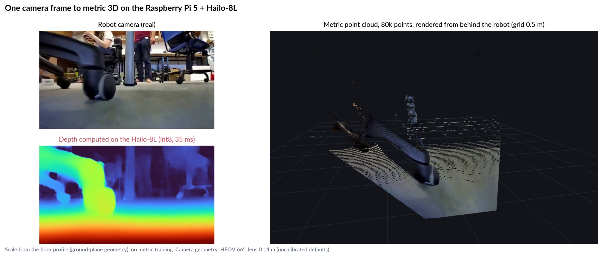
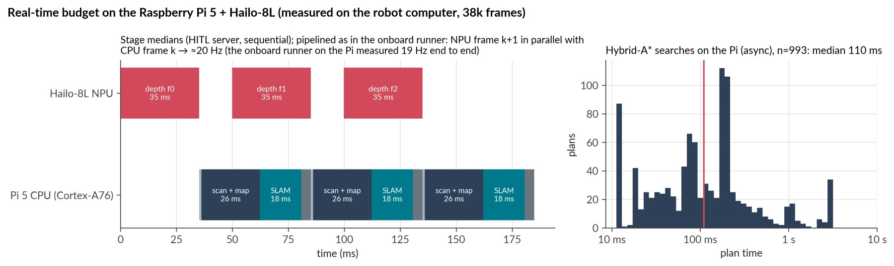

An attention-free student of Depth Anything V2 that runs on a 13-TOPS integer NPU with int8 equal to float,
and the onboard obstacle avoidance, global planning and SLAM it makes possible on a small rover.
Itai M. · DANIEL: Depth Anything Navigation In Exteriors, Learned · 2026
left 4K camera, outdoorsright depth computed on the Hailo-8L, every frame
27.1 FPSdepth at 288×512 on the Hailo-8L, batch 1, measured on the Pi
r = 0.99993int8 on the chip vs the same network in float, 500 frames
0.269AbsRel on held-out simulated ground truth (next best on the chip 0.354); on real stereo-verified points, indistinguishable from the zoo DAv2-S
8.2 / 10scenes reached with no contact, with the real Pi + Hailo in the real-time loop
Foundation depth does not reach a small NPU through better quantisation.
The Hailo-8L runs attention in int8, and diffuse attention at a few hundred tokens falls below one quantisation
step: our build of Depth Anything V2 and the vendor's both erase obstacles. We distil the 335 M-parameter teacher into a
24.5 M-parameter network with no attention at all, range obstacles from where they meet the floor, and run mapping,
hybrid-A* planning and SLAM on the Pi itself.
Demos
The real board, in the loop and on real video.
4K source · every frame on the Hailo-8L
Outdoors: the deployed student, frame by frame on the NPU
A low camera crossing a field toward rocks and posts. Every frame went through the student v5 HEF on the Raspberry Pi 5's
Hailo-8L (34.6 ms per frame on the NPU) and was read back; the camera half is the 4K original. Frames from this
video (every 10th) were in the student's training set, so it is a demonstration, not a held-out result.
Download the 4K version.
Real Pi 5 + Hailo-8L in the loop
The deployed stack drives on its own SLAM pose
Isaac Sim streams the car's camera to the real Pi; the Pi computes depth on the Hailo, maps, plans and replies with
steering and throttle, applied only when they arrive. The six scenes one recorded pass completed with no contact, each
uncut; that pass scored 6 clean and 7 reached of 10, the five-seed mean is 8.2.
Real robot camera
Depth, point cloud and obstacle scan from one camera
Real robot video with depth computed on the Hailo-8L (student v3 HEF, every frame read back from the chip), the metric
point cloud scaled by the floor, and the ground-contact scan with the chosen arc.
All ten scenes
A full real-board pass, failures included
Every scene of the same pass, labelled with its outcome on the car's real footprint: chairs, a cone slalom, a barrel
gate, people, mixed clutter and a crate wall, with timeouts where they happened.


⇆
cameraHailo-8L depth
Drag
Camera ↔ depth from the chip
Held-out real frames; depth from the deployed student v5, read back from the Hailo-8L.
Method
Three ideas, each measured on the chip.
01
Why transformer depth breaks on the Hailo-8L
At the chip's 449 tokens, a diffuse softmax weight is about 1/449 ≈ 0.0022, below one uniform int8 step of 1/255 ≈ 0.0039.
Measured in float, 91 % of attention weights fall below that step and carry 17–33 % of each query's
attention mass. Re-calibration and quantisation fine-tuning do not fix it; removing attention does.

02
An attention-free student
A ResNet-34 encoder and a U-Net decoder of convolution, batch norm, ReLU and bilinear upsampling: every operation quantises
cleanly. 24.5 M parameters (DAv2-S: 24.8 M), distilled from DAv2-Large with a scale- and shift-invariant loss,
then fine-tuned on rendered ground truth. On the chip: 35.1 ms, int8 = float at r 0.99993.
03
Metric space without metric depth
Relative depth has no scale. But where an obstacle meets the floor, the image row alone gives its distance from the camera
height. The network only has to say where each column's floor ends; the columns become a 69°, 4 m laser scan, and the
floor profile becomes a ruler for a metric point cloud.
Z = fy · h / (vc − cy)

cameraRGB frame30 Hz
Hailo-8L NPUStudent depth35.0 ms, int8
Pi CPUGround-contact scan + cloudin parallel with the NPU
Pi CPUHit-count map + SLAMground VO, encoder, gyro
Pi workerHybrid A* + safety cascade110 ms median
Pi CPUPure pursuit → PWMESC brake gate
Results
Every depth network we could run on the Hailo-8L.
400 held-out simulated frames with the renderer's metric depth and 100 held-out real robot frames. Every Hailo model runs on
the chip and is read back; per-frame least-squares scale and shift in disparity. Obstacle pixels are those that land on
a prop's collider, which removes the renderer's floor speckle.
Accuracy against measured on-chip speed
Hover or focus a point. Dashed lines: float GPU models that cannot run on the Pi at this rate.
Model
Runs on
AbsRel all
AbsRel obst.
δ1
r (real)
Speed

Real robot frames, depth as computed on the Hailo-8L (except the GPU teacher). The int8 transformer builds lose the
scene; the student keeps the teacher's structure at 27 FPS. Dark areas lie outside a model's input crop.
Closing the loop: a real-time error budget.
Ten frozen scenes in a Gaussian-splat reconstruction of a real yard, eleven obstacle types with honest colliders, at least five
seeds per arm, contacts scored on the car's real 0.557 × 0.294 m footprint. Clean goals of 10:
Oracle: exact props, lockstep
9.8
Real time, exact obstacles
9.2
Hailo depth, simulator pose
7.9 ± 1.1
Hailo depth, own SLAM pose
7.7 ± 0.7
Own pose, real Pi + Hailo
8.2 ± 0.4
Camera-only odometry
2.6
Execution costs about 0.6, perception 1.3, self-localisation 0.2 clean goals (0.9 goals reached). Ten seeds for the
deployed arms, five for the others; the own-pose arms use a simulated wheel encoder and gyro.

Per scene: the misses concentrate on the cone slalom, the gate, the chair cluster, the crate wall and the
person-and-cones scene.

Onboard SLAM and planning on the robot's own pose: every plan the Pi made in one slalom episode. The car reached
the goal despite 0.47 m peak drift.

One real frame to metric 3D on the Pi: chip depth, scale from the floor profile, flying pixels removed.

The budget on the Pi: NPU 35 ms overlapped with 47–49 ms of CPU; 16.5 Hz on 720p video with SLAM,
27 Hz without; 28 h of real-board runs without throttling.
Honestly
What is not solved yet.
Not 10/10. The oracle reaches 9.8, so the gap is real. Most remaining contacts are the car's front corner grazing the
side of a cone, a person or a crate the scan places 5–15 cm too far out.
Low bases. Cone plates and feet lower than the scan's 5 cm threshold are invisible; ground-truth depth would resolve
them at 2 cm, the student's blurred floor-to-base boundary does not.
Exploration. With a ±34° camera the planner commits to routes through space it has not seen; one scene depends on this.
One yard, simulated odometry. The suite is one reconstructed yard; the wheel encoder and gyro are simulated; the real
frames have no ground truth; v5 vs v3 is not resolved on simulator pose (7.9 vs 7.9, ten seeds) and not significant on own pose (p ≈ 0.17).
One drive through a park: our network against the Intel RealSense, in depth and in SLAM.
The car was driven by hand through a park in full sun, recording everything: the colour camera, the RealSense D435's
on-chip stereo depth and both of its infrared images, and the depth the student computed on the Hailo-8L, frame by frame
(219 s recorded; the SLAM window, from the first stereo frame, is 216 s). There is no ground truth on this drive.
The yardstick is an independent metric system, RTAB-Map run on the RealSense's own infrared image and stereo
depth: one graph over 97 % of the drive, with four loop closures and 47 odometry resets. Every SLAM score below is
agreement with it, not accuracy, from one drive; one run per method except ORB-SLAM3 stereo, DROID and VGGT (three runs each).
The reference itself repeats to 0.64–0.79 m RMS (a second run, and two with the camera's factory intrinsics); scored
against any of those four runs, no method's skill moves by more than 0.06 and no ranking changes.
Both panels follow the drive from the same reference poses (RTAB-Map's position and heading), behind the car's real 3-D model, so only the
depth differs. Each map is that source's own depth turned into a colour point cloud (left: the RealSense stereo; right: our
network, at the scale the car itself uses), coloured by the camera and growing as the car drives; where the depths disagree,
the maps differ. The cone ahead of the car is its camera's view with the live frame on it; cyan lines are this frame's
pseudo-lidar rays. Header: the median range gap between the two scans for obstacles beyond 1 m, ray by ray (both ranges
from ground-contact geometry), and how much of the view each source calls blocked. The stereo went blind in direct sun on 0.1% of frames (footer). The video closes on a
bird's-eye view of each source's whole map, a stretch of the park as a 3D Gaussian splat (from the colour camera alone, a picture of the place rather than part of the comparison), then every SLAM method against the reference, the 1,000-point depth
benchmark and the three headline numbers. People are blurred, and kept out of the point clouds.
Where each method thinks the car went
White: the independent reference. Click a method to show or hide it; all are in the table.
Skill = 1 − RMS / RMS of standing still, against the reference: agreement, not accuracy; one run each except ORB-SLAM3 stereo, DROID and VGGT (three runs each).
Skill on a partial overlap does not rank against skill over the whole drive.
Hover a track: dots mark every method's position at that same moment.
Method
Tracked
Skill vs standing still
RMS vs reference
90th pct
Path
Path / reference
Which depth is better inside SLAM? The simulator answers, with ground truth
The real drive has no ground truth, and our odometry fails upstream of the depth. In the
hardware-in-the-loop simulator the car drove a loop twice under three lighting presets, carrying a simulated RealSense
infrared pair (SGBM), a planar lidar ring and exact depth. Every source went through our SLAM; trajectory error (ATE) is
measured against the true poses. Our student is in-distribution here: it was fine-tuned on exact depth rendered in this
same yard.
Front end and scan
exact depth
SGBM stereo
ours, float
ours, Hailo chip
Commands only, no scan matching (noon; 0.161 once closures matched on exact-depth scans are added, 2 of 2 false)
0.107
Lidar ring as the scan (the same renderer's depth: a consistency check)
0.083 ± 0.013
Deployed front end: ground visual odometry
0.671 ± 0.003
0.543 ± 0.078
0.532 ± 0.062
0.561 ± 0.077
Deployed pseudo-scan (floor contact)
0.844 ± 0.034
0.813 ± 0.107
0.650 ± 0.327
0.489 ± 0.278
Horizontal-plane scan, per-frame floor-fit scale
0.501 ± 0.069
0.482 ± 0.179†
0.433 ± 0.090
0.523 ± 0.166
… the floor-fit scale smoothed over ~20 frames
0.415 ± 0.129
0.720 ± 0.152†
0.732 ± 0.057
0.469 ± 0.228
… the true metric scale
0.074 ± 0.003
0.195 ± 0.048
–
–
ATE in metres after loop closure, mean ± sd over three sessions (noon, evening, dusk) of one seed and one trajectory: the spread is lighting plus render nondeterminism, not seeds or routes. † dusk excluded: SGBM gave no usable scan and the arm fell back to the commands. The simulated car obeys its commands without slip, so every camera arm shows how much a depth source corrupts a near-exact prior. The network has no true scale, hence no entry. The last two columns are the same network: its int8 output from the Pi's Hailo-8L on the same frames agrees with the float twin at r 0.9999 per frame, yet moves the per-session ATE by a median 0.13 m (up to 0.48 m, 12 pairs): this SLAM amplifies tiny depth differences, so gaps between camera arms smaller than that are not resolved.
The SLAM needs a correct metric scale, not only a steady one. In our 2D SLAM on
one simulated loop, giving exact depth its true scale instead of the per-frame floor-fit scale from camera height cuts the
error 6.8×, in each session. Smoothing the floor-fit scale in time does not recover it: on exact depth the fit puts a
true 2 m at a median 1.07×, and at 1–2 m that error drifts slowly along the route rather than jittering, so a filter
cannot remove it. Every camera arm except true-scale exact depth is worse than the commands alone. The same network's int8
output from the Pi's Hailo-8L, replayed offline through the chip, moves each session's error by as much as the gaps between
camera arms (table note), so only these large effects are resolved. Of the ways to get a
correct scale, only stereo was tested here; an IMU or a metric model is untested.
What this drive shows
Beyond 1 m the network places obstacle bases within a median 25 % of the RealSense; on grass, both stumble. From the same poses, where both
see an obstacle beyond 1 m, the network's range is within 25 % of the stereo's (median over 931 frames of each frame's ray-by-ray gap; 29 % pooled over all 28,616 rays).
Both ranges come from ground-contact geometry and the camera height, so this compares where each source puts an
obstacle's base; it is similar in size to the benchmark's AbsRel below, though a different quantity. Inside 1 m, both mark grass as obstacles, in different places. From 16 cm
the stereo resolves single tufts and marks 63 % of image columns blocked. The network marks 41 %, and sometimes
draws a false band across motion-blurred lawn. Neither is right on grass, which this car drives straight over.
Our onboard odometry is the weak link, not the depth. As deployed, our stack measured the drive 2.3× too short.
The cause: a plausibility gate in its camera odometry rejected any motion faster than the simulated car's top
speed. That threw away 23 % of frames, exactly the fast ones, since the real car reaches about 2.9 m/s. Opening the gate
to a physical bound fixes the scale (path within 8 % of RTAB-Map's, the only check of the reference's scale that shares
none of its inputs)
but not the shape: skill falls to −0.38…−0.62, worse than the commands alone (−0.31). Uncorrected roll
is the prime suspect, not yet isolated. The depth hardly matters: with that gate, the odometry alone scores −0.615 and
with the scan match −0.618. (As deployed, network vs RealSense depth score −0.11 vs +0.03, but on different frame
sets, so that gap is not attributed to depth.) A gyro heading from an IMU on the same bus is the planned, untested fix.
Independent systems agree with the reference. VGGT-SLAM 2.0 (2026, monocular) agrees with it at skill +0.80 (bit-identical over three runs),
spanning 99 % of the drive with 351 keyframes (gaps interpolated). ORB-SLAM3 on the RealSense stereo pair or RGB-D scores
+0.89 (stereo over three runs +0.879 ± 0.013), but only on the 16–23 % of the drive it tracks before fragmenting into separate maps, and it shares the
reference's own images and depth, so part of that agreement is common input. DROID-SLAM +0.27 ± 0.19 over three runs (+0.39, +0.36, +0.06), so it does not rank against DPV-SLAM (+0.39) or DPVO (+0.29). Monocular
ORB-SLAM3 and MASt3R-SLAM lose tracking within seconds on sunlit grass. Most baselines first reproduced their published
error on TUM fr1/desk; Glob3R and ORB-SLAM3 stereo were not checked there (fr1 has no stereo pair), and monocular ORB-SLAM3
failed 1 of 4 runs.
Loop closure needs the right drive. Of 205 places this car passed twice, 178 were driven the opposite way. A forward
camera with a 69° field of view sees different things each way, so its scan cannot close those loops. As deployed ours closes
none (one with the physical gate), and the 27 same-direction revisits did not close either. The next recordings
drive one route twice in the same direction from a taped mark, with AprilTags for true positions.
Two corrections, published the same day. The first version of this section compared against our own stack fed
RealSense depth, which shares our odometry, so its agreement was not evidence. It also projected several SLAM systems onto
the wrong plane (they report the camera's optical frame), which made them look collapsed. Both are fixed above.
Three recorder defects, found and worked around. The capture tool's text header byte-shifted every stereo frame,
which we recovered exactly from the lossless files. The RealSense's stereo timestamps drift about 8 % against real time,
so frames are paired by image content (residual median 12.5 ms, p90 31.7 ms; 26 of 388 benchmark frames flagged and
excluded). A power cut lost the last seconds of every stream.
Depth, point by point: 1,000 points every method is scored on
No lidar on the car, so the reference is three different stereo matchers on the same infrared pair (the
D435's chip, OpenCV SGBM and Fast-FoundationStereo). They must agree within 2 % + 1 % per metre, between 0.3 and 3 m. They
share the images and the rectification, so a common-mode error there would not show. Points are placed in the colour image
with the D435's factory calibration, read from the unit after the drive.
Fast-FoundationStereo is distilled from a backbone with Depth Anything V2 features, but all three must agree, so it can only
veto a point. The 1,000 points are balanced across five distance bins from 309 frames, inside the region every model sees,
and every monocular model is scored on exactly these points. Relative models get their scale (and shift) fitted on other
points of the same frame, never the scored ones. A stereo matcher is scored only against the other two, on its own points
in the infrared frame with its holes excluded: agreement among matchers, not comparable with the networks.
Depth source
Runs on
AbsRel · per frame
δ1
AbsRel · one scale per drive
Raw metric: pred / true
Depth Anything 3-Large
GPU
0.101
0.90
0.418
–
Depth Anything 3-Mono-Large
GPU
0.107
0.88
0.359
–
Depth Anything 3-Base
GPU
0.110
0.87
0.408
–
Depth Anything 3-Small
GPU
0.115
0.86
0.390
–
Depth Anything V2-S
GPU
0.160
0.82
0.427
–
Depth Anything V2-L (teacher)
GPU
0.170
0.84
0.422
–
Depth Anything V2-B
GPU
0.181
0.83
0.426
–
Depth Pro
GPU
0.202
0.65
0.402
×2.0
MoGe-3
GPU
0.205
0.62
0.261
×3.5
MoGe-2
GPU
0.207
0.63
0.262
×3.3
Depth Anything 3-Metric-Large
GPU
0.222
0.58
0.297
×2.4
UniDepthV2-L
GPU
0.222
0.61
0.305
×1.7
DAv2-S, Hailo Model Zoo
Hailo-8L int8
0.234
0.74
0.432
–
Ours, replayed on the chip
Hailo-8L int8
0.258
0.74
0.413
–
Ours, float twin
GPU
0.258
0.75
0.410
–
Ours: distilled student v5, live on the car
Hailo-8L int8
0.262
0.73
0.410
–
SC-DepthV3, Hailo Model Zoo
Hailo-8L int8
0.392
0.22
0.435
–
FastDepth, Hailo Model Zoo
Hailo-8L int8
0.394
0.23
0.415
–
DAv2-S, our int8 build
Hailo-8L int8
0.443
0.58
0.439
–
Stereo, below: each matcher scored leave-one-out against the other two, on its own points in the infrared frame, holes excluded. Agreement among matchers on the same images, not comparable with the rows above.
RealSense D435 on-chip stereo (no depth on 5% of points)
stereo
0.009
1.00
–
metric
OpenCV SGBM on the IR pair (no depth on 17% of points)
stereo
0.010
1.00
–
metric
Fast-FoundationStereo on the IR pair (no depth on 0% of points)
stereo
0.040
0.97
–
metric
On the chip, our student is indistinguishable from the Hailo Model Zoo's Depth Anything V2-S on these points
(difference +0.017, 95 % CI −0.060 to +0.118, p = 0.70; on |log(predicted/true)| +0.009, CI −0.012 to +0.032).
The interval rules out an advantage for ours larger than 0.060, so the simulator's advantage (0.269 vs 0.354, on held-out
frames of the yard it was fine-tuned on) is absent on these mostly-ground points. On obstacles, the simulator's direction
returns: on a separate stratum (points at least 0.15 m above each frame's floor plane: trunks, benches, bushes, people;
319 points, 87 frames), scored on |log(predicted/true)| because a few blow-ups rule the mean there, ours beats the zoo model
by −0.165 (CI −0.290 to −0.050, p = 0.012), an advantage in the tail (median error 0.232 vs 0.240).
Depth Anything V2-L and 3-L are better than ours on obstacles, by 0.153 and 0.184. Without Fast-FoundationStereo (D435 + SGBM
only, a new 1,000-point set) the mean leans our way (−0.061, CI −0.132 to +0.001, p = 0.07), carried by
the zoo model's blow-ups; on |log| the two tie. It beats the other three edge builds (our int8 DAv2-S, SC-DepthV3, FastDepth)
(p < 0.001; SC-DepthV3 and FastDepth get a median scale only) and trails its GPU teacher by 0.092 (paired 0.085,
CI 0.047–0.141; without Fast-FoundationStereo +0.028, CI −0.013 to +0.066, not resolved). On the three-matcher set,
live on the car it is 0.004 worse than its own chip replay (CI 0.001–0.006).
Metric foundation models misjudge scale from 16 cm. Raw, all of them overestimate distance here, by 1.7×
(UniDepthV2) to 3.5× (MoGe-3), plausibly because they were trained on human-height cameras. Aligned per frame they score
0.20–0.22, better than ours but not resolvably. With one scale for the whole drive, fitted on this drive's own points,
MoGe-3 and MoGe-2 (0.26) beat every relative network (0.36–0.43); ours is at 0.410, against the zoo DAv2-S −0.040
(CI −0.106 to +0.061). Every relative network loses 0.15–0.32 under one scale per drive (ours 0.15): relative
output scale moves from frame to frame. Relative networks need a per-frame scale;
our robot takes it from the camera's known height, which this benchmark does not score.
The factory calibration changed these numbers. A first version placed the points with the datasheet's nominal
calibration, which misplaces every point by a median 14.5 px. The factory values put depth edges 6.7 px from the colour
image's edges against 12.0 px (closer on all 20 frames that could be scored). On the same physical points they cut every
network's error by 10–57 % while the stereo scores do not move. Sharp GPU models gained most; the nominal results are
kept in the repository as a record.
The stereo rows are agreement, not accuracy. Each matcher is scored against the other two on its own points, so
its 1–4 % cannot be set against the networks' numbers. The points are where stereo works by construction; sky, glare
and objects closer than its minimum range are not in this set.
FastDepth's outputs on the chip are poor outdoors (an indoor-trained model).
Citation
BibTeX
@misc{itaim2026seeing,
title = {Seeing to Drive on a Single Board: Attention-Free Distilled Depth on a
Raspberry Pi 5 + Hailo-8L for Onboard Obstacle Avoidance, Planning and SLAM},
author = {M., Itai},
year = {2026},
url = {https://itaim18.github.io/seeing-to-drive/}
}
Built on Depth Anything V2 and Depth Anything 3, the Hailo Model Zoo,
NVIDIA Isaac Sim / Isaac Lab and its neural-reconstruction rendering. Weights and data CC-BY-NC-4.0 (the teacher's licence).